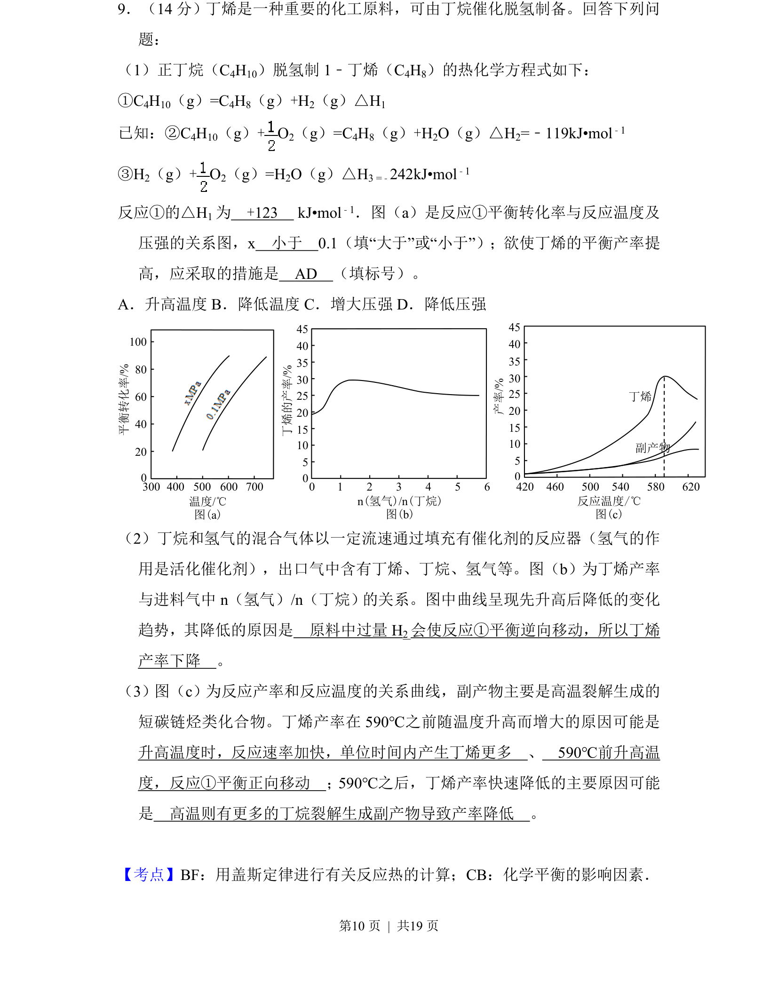
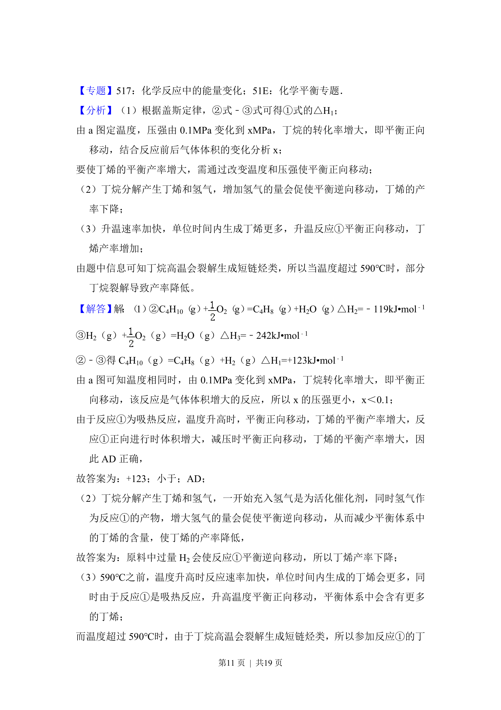
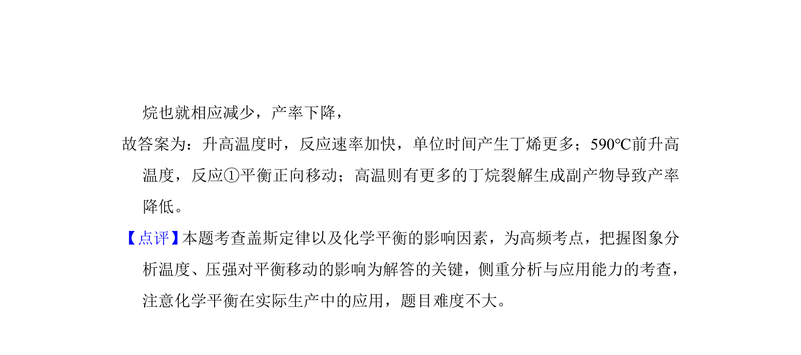

考点：用盖斯定律进行有关反应热的计算 化学平衡影响因素

这是一道化学热化学与化学平衡综合题，计算反应热并分析温度、压强、投料比对平衡转化率和产率的影响。


📄 原 PDF 第 10 页：
素材/真题/吉林/2008-2024·（吉林）化学高考真题/2017年高考化学试卷（新课标Ⅱ）（解析卷）.pdf
9．（14分）丁烯是一种重要的化工原料，可由丁烷催化脱氢制备。回答下列问 题： （1）正丁烷（C4H10）脱氢制1﹣丁烯（C 4H8）的热化学方程式如下： ①C4H10（g）=C4H8（g）+H2（g）△H1 已知：②C4H10（g）+O 2（g）=C4H8（g）+H2O（g）△H2=﹣119kJ•mol﹣1 ③H2（g）+O 2（g）=H2O（g）△H3 =﹣242kJ•mol﹣1 反应①的△H1为 +123 kJ•mol﹣1．图（a）是反应①平衡转化率与反应温度及 压强的关系图，x 小于 0.1（填“大于”或“小于”）；欲使丁烯的平衡产率提 高，应采取的措施是 AD （填标号）。 A．升高温度B．降低温度C．增大压强D．降低压强 （2）丁烷和氢气的混合气体以一定流速通过填充有催化剂的反应器（氢气的作 用是活化催化剂），出口气中含有丁烯、丁烷、氢气等。图（b）为丁烯产率 与进料气中n（氢气）/n（丁烷）的关系。图中曲线呈现先升高后降低的变化 趋势，其降低的原因是 原料中过量H 2会使反应①平衡逆向移动，所以丁烯 产率下降 。 （3）图（c）为反应产率和反应温度的关系曲线，副产物主要是高温裂解生成的 短碳链烃类化合物。丁烯产率在590℃之前随温度升高而增大的原因可能是 升高温度时，反应速率加快，单位时间内产生丁烯更多 、 590℃前升高温 度，反应①平衡正向移动 ；590℃之后，丁烯产率快速降低的主要原因可能 是 高温则有更多的丁烷裂解生成副产物导致产率降低 。
【考点】BF：用盖斯定律进行有关反应热的计算；CB：化学平衡的影响因素．菁 300 400 500 600 700 温度/℃ 图(a) 100 80 60 40 20 0 平衡转化率/% 0 1 2 3 4 5 6 n(氢气)/n(丁烷) 图(b) 45 40 35 30 25 20 15 10 5 0 丁烯的产率/% 丁烯 副产物 45 40 35 30 25 20 15 10 5 0 产率/% 420 460 500 540 580 620 反应温度/℃ 图(c)